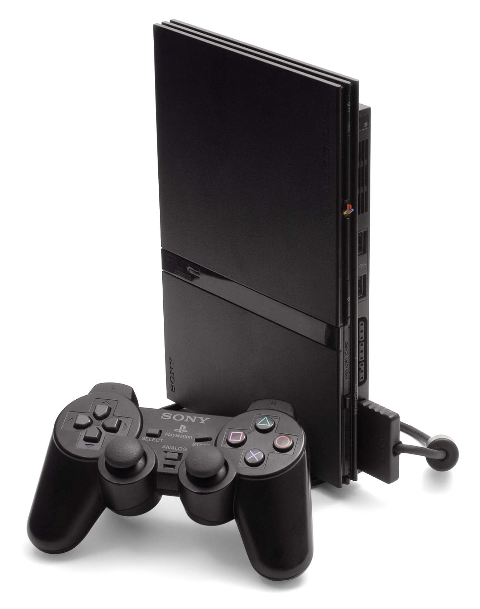
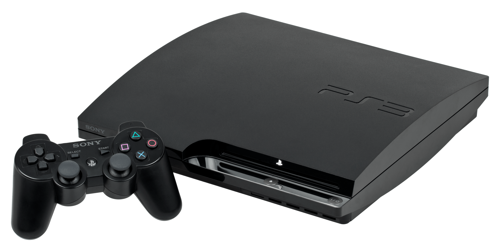

Play Station One
La PSOne (también conocida como PlayStation One) es una consola de videojuegos de la compañía Sony. Fue lanzada en 1994 en Japón y en 1995 en América del Norte, Europa y otros mercados. Es una versión más pequeña de la PlayStation original y se caracteriza por su diseño compacto y elegante.
La PSOne es una consola de 32 bits que utiliza discos compactos (CD) para almacenar juegos. Fue una de las primeras consolas de videojuegos en tener gráficos 3D y una unidad de procesamiento de gráficos (GPU) dedicada, lo que permitió un mayor rendimiento y calidad de imagen en comparación con las consolas anteriores.
La consola tiene una amplia variedad de juegos, incluyendo algunos títulos icónicos como "Final Fantasy VII", "Metal Gear Solid" y "Resident Evil". También cuenta con la capacidad de reproducir películas en DVD con un accesorio adicional llamado PSOne LCD Screen.
En términos de conectividad, la PSOne cuenta con puertos para conectar dos controladores, un cable AV para conectarse a un televisor y una ranura para tarjetas de memoria para guardar el progreso del juego.
La PSOne fue un gran éxito comercial, vendiendo más de 100 millones de unidades en todo el mundo antes de que fuera descontinuada en 2006. A pesar de su antigüedad, sigue siendo una consola popular entre los coleccionistas de juegos retro y los entusiastas de los videojuegos.
Play Station 2
La PlayStation 2 (también conocida como PS2) es una consola de videojuegos lanzada por Sony en el año 2000. Es la sucesora de la PSOne y es considerada como una de las consolas más exitosas en la historia de los videojuegos.
La PS2 es una consola de 128 bits que utiliza discos DVD para almacenar juegos. Fue la primera consola en tener una unidad de DVD incorporada, lo que permitió a los desarrolladores de juegos crear títulos más grandes y con mejores gráficos que los posibles con la PSOne.
La PS2 también fue la primera consola en tener una unidad de procesamiento de gráficos (GPU) dedicada, lo que permitió una mayor calidad de imagen y una mayor velocidad de procesamiento. Además, la consola incluía un puerto USB que permitía la conexión de dispositivos externos, como el controlador DualShock 2 y dispositivos de almacenamiento como unidades flash USB y discos duros externos.
La PS2 cuenta con una amplia variedad de juegos, incluyendo algunos de los títulos más icónicos en la historia de los videojuegos, como "Grand Theft Auto: San Andreas", "God of War", "Shadow of the Colossus" y "Metal Gear Solid 2: Sons of Liberty". También cuenta con la capacidad de reproducir películas en DVD y CDs de música.
La PS2 fue un gran éxito comercial, vendiendo más de 155 millones de unidades en todo el mundo antes de que fuera descontinuada en 2013. Su longevidad y popularidad la convierten en una de las consolas más queridas por los jugadores y coleccionistas de juegos retro.
Play Station 3
La PlayStation 3 (también conocida como PS3) es una consola de videojuegos lanzada por Sony en el año 2006. Es la sucesora de la PS2 y una de las consolas más potentes de su época.
La PS3 es una consola de 128 bits que utiliza discos Blu-ray para almacenar juegos, lo que permitió una capacidad de almacenamiento mucho mayor que la PS2. También cuenta con una unidad de procesamiento de gráficos (GPU) avanzada y un procesador Cell, lo que permitió un mayor rendimiento en términos de gráficos y procesamiento en comparación con las consolas anteriores.
La PS3 tiene una amplia variedad de juegos, incluyendo algunos títulos icónicos como "The Last of Us", "Uncharted 2: Among Thieves", "Metal Gear Solid 4: Guns of the Patriots" y "Grand Theft Auto IV". Además, la consola cuenta con la capacidad de reproducir películas en Blu-ray y DVD.
La PS3 también incluye conectividad Wi-Fi, lo que permite la descarga de juegos y contenido adicional, y la posibilidad de conectarse en línea para jugar con otros jugadores a través de PlayStation Network. Además, la consola cuenta con una amplia gama de accesorios, como el controlador inalámbrico DualShock 3, la cámara PlayStation Eye y el controlador de movimiento PlayStation Move.
La PS3 fue un éxito comercial, vendiendo más de 87 millones de unidades en todo el mundo antes de que fuera descontinuada en 2017. A pesar de su antigüedad, la consola sigue siendo popular entre los jugadores y es considerada una de las mejores consolas de videojuegos de todos los tiempos.
Play Station 4

La PlayStation 4 (también conocida como PS4) es una consola de videojuegos lanzada por Sony en el año 2013. Es la sucesora de la PS3 y una de las consolas más populares de su generación.
La PS4 es una consola de 64 bits que utiliza discos Blu-ray para almacenar juegos, lo que permite una capacidad de almacenamiento mayor que la PS3. Además, cuenta con una unidad de procesamiento de gráficos (GPU) avanzada y un procesador AMD Jaguar de ocho núcleos, lo que permite un mayor rendimiento en términos de gráficos y procesamiento.
La PS4 tiene una amplia variedad de juegos, incluyendo algunos títulos icónicos como "The Last of Us Part II", "Uncharted 4: A Thief's End", "God of War" y "Marvel's Spider-Man". Además, la consola cuenta con la capacidad de reproducir películas en Blu-ray y DVD.
La PS4 también incluye conectividad Wi-Fi y Bluetooth, lo que permite la descarga de juegos y contenido adicional, y la posibilidad de conectarse en línea para jugar con otros jugadores a través de PlayStation Network. Además, la consola cuenta con una amplia gama de accesorios, como el controlador inalámbrico DualShock 4, la cámara PlayStation Camera y el dispositivo de realidad virtual PlayStation VR.
La PS4 ha sido un gran éxito comercial, vendiendo más de 116 millones de unidades en todo el mundo. A pesar de la llegada de su sucesora, la PS5, la PS4 sigue siendo una consola popular y una excelente opción para los jugadores que buscan una amplia biblioteca de juegos y una experiencia de juego fluida y de alta calidad.
Play Station 5

La PlayStation 5 (también conocida como PS5) es la consola de videojuegos más reciente lanzada por Sony en noviembre de 2020. Es la sucesora de la PS4 y cuenta con una serie de mejoras significativas en comparación con su predecesora.
La PS5 utiliza un procesador AMD Zen 2 personalizado con una GPU RDNA 2 personalizada, lo que permite una capacidad de procesamiento y gráficos avanzados, así como una velocidad de carga y renderizado más rápida gracias a su unidad de estado sólido (SSD). La consola también es compatible con juegos en resolución 4K y 8K, y utiliza tecnología de trazado de rayos para un renderizado más realista.
La PS5 cuenta con una amplia variedad de juegos, incluyendo títulos exclusivos como "Demon's Souls", "Ratchet & Clank: Rift Apart", y "Spider-Man: Miles Morales". Además, la consola cuenta con la capacidad de reproducir películas en Blu-ray y DVD, y tiene compatibilidad con muchos juegos de la PS4.
La PS5 también incluye conectividad Wi-Fi y Bluetooth, lo que permite la descarga de juegos y contenido adicional, y la posibilidad de conectarse en línea para jugar con otros jugadores a través de PlayStation Network. Además, la consola cuenta con una serie de accesorios opcionales, como el controlador inalámbrico DualSense, la cámara HD, y los auriculares inalámbricos PULSE 3D.
La PS5 ha sido un gran éxito comercial, con más de 13 millones de unidades vendidas en sus primeros meses de lanzamiento. Es considerada como una de las consolas más avanzadas tecnológicamente y ofrece una experiencia de juego inmersiva y emocionante para los jugadores de todo el mundo.